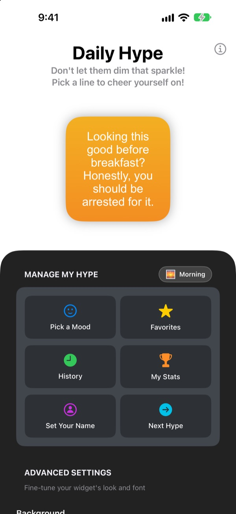
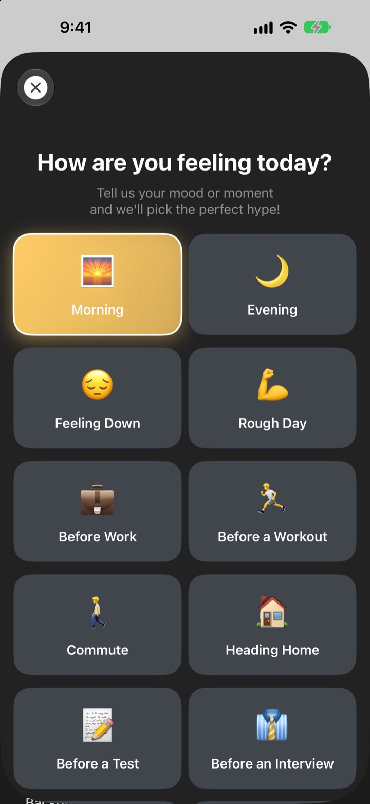
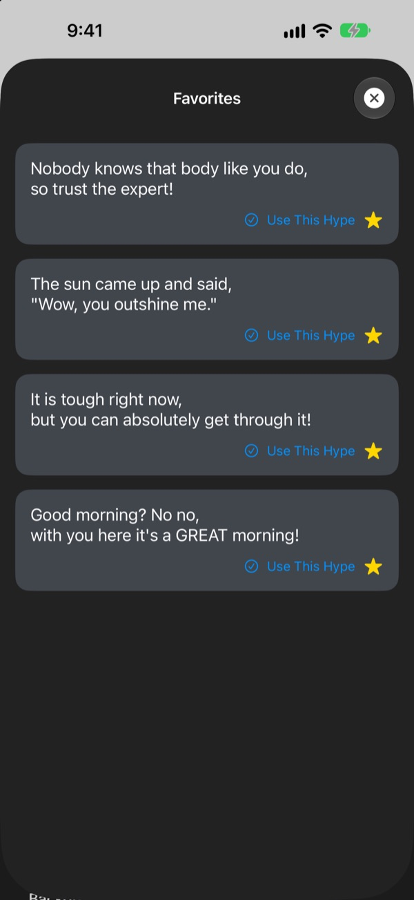
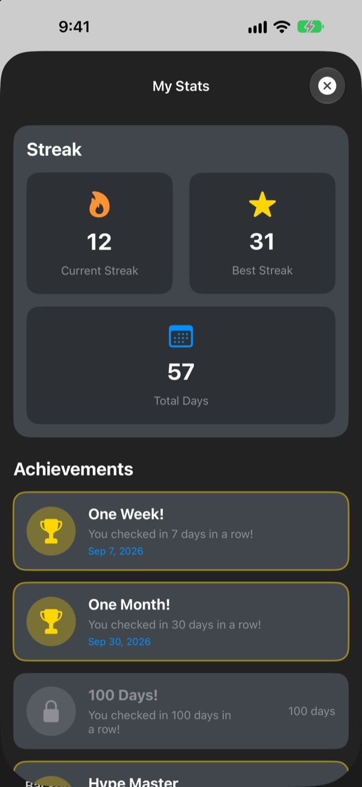

Your biggest fan,
right on your home screen
Daily Hype is a widget that compliments you way too much, on purpose. Morning hype in the morning, interview hype before the interview. Style it with your own font, colors and background.
One purchase unlocks everything. No subscription, no ads.

Get hyped right now
Pick a mood and the widget shows a line for it. Tap Next Hype for a random one out of all 281.
Who's the harshest critic you know? Is it you?
On the commute, before the interview, on the way home, the voice in your head mostly nags. Daily Hype takes your side from the home screen, several times a day, a little more than seems reasonable. The moment you snort at your phone, some confidence comes back.
Hype that fits the moment
Choose from 14 moods and situations like Morning, Commute, Rough Day, Before an Interview and Before a Date, and a matching line lands on your widget right away. Can't decide? There's Random too.

Keep the ones you love
Tap the star to save a line to Favorites, and scroll back through past lines in History. Tap Use This Hype and it goes straight onto your widget.

Show up daily and watch it add up
Every day you check in keeps your streak going. Hit 7, 30 or 100 days in a row, or 50 and 100 days in total, and an achievement unlocks.

Three steps to start
- 1
Pick a mood
Open
Pick a Moodand tap whatever fits right now. - 2
Style the widget
Choose a font, text color, background and refresh interval in Advanced Settings.
- 3
Add it to your home screen
Touch and hold the home screen, tap +, and find Daily Hype.
Make the widget yours
- Font
- 13 options, including Futura, Georgia and Marker Felt
- Text color
- Any color you like
- Background
- A two-color gradient, or one of the built-in photos
- Alignment
- Left, center or right
- Line spacing
- Tighter or looser lines
- Refresh interval
- A new line every 5, 15 or 30 minutes
You choose the widget size when you add it to the home screen.
Buy it once and you're done
The app
- 281 lines across 14 moods
- A home screen widget you can style
- Favorites and History
- Streaks and achievements
Support the developer
- Pick a small, medium or large tip
- It doesn't unlock anything. It's simply a way to say thanks
Only if and when you feel like it.
No subscription, no extra purchases, no ads.
Questions
How do I add the widget?
Touch and hold an empty spot on your home screen until the icons jiggle, tap + at the top, search for Daily Hype and pick a size.
How is the next line chosen?
When you pick a mood, a line for that mood goes straight onto your widget. After that, the widget shows a random line from all 281 at the refresh interval you chose. You can also tap Next Hype in the app to skip ahead.
Can I change the widget's font or refresh interval?
Yes. In Advanced Settings you can change the font, text color, background, alignment, line spacing and refresh interval. The interval can be 5, 15 or 30 minutes.
The widget didn't change right away.
iOS decides exactly when widgets redraw, so it can run a little behind the interval you picked. Open the app and close it again, and the widget updates.
How does the streak work?
Each day in a row that you check in adds to your streak. My Stats shows your current streak, your best, total days and your achievements.
My favorites and history are gone.
Everything is stored only on your device, so it doesn't carry over if you delete the app or switch phones. If you didn't delete the app and it still vanished, please email us.
Is any of my data sent anywhere?
No. The app collects no personal data. Your favorites and history stay on your device.
How do I report a bug or suggest something?
Right from Contact the Developer in the app, or by email or Instagram DM at @lee25_ios. We reply as soon as we've had a look.
Questions or feedback? Write to leeo@kakao.com.